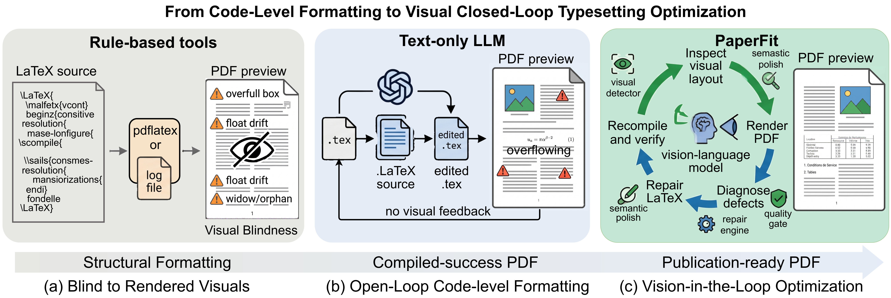
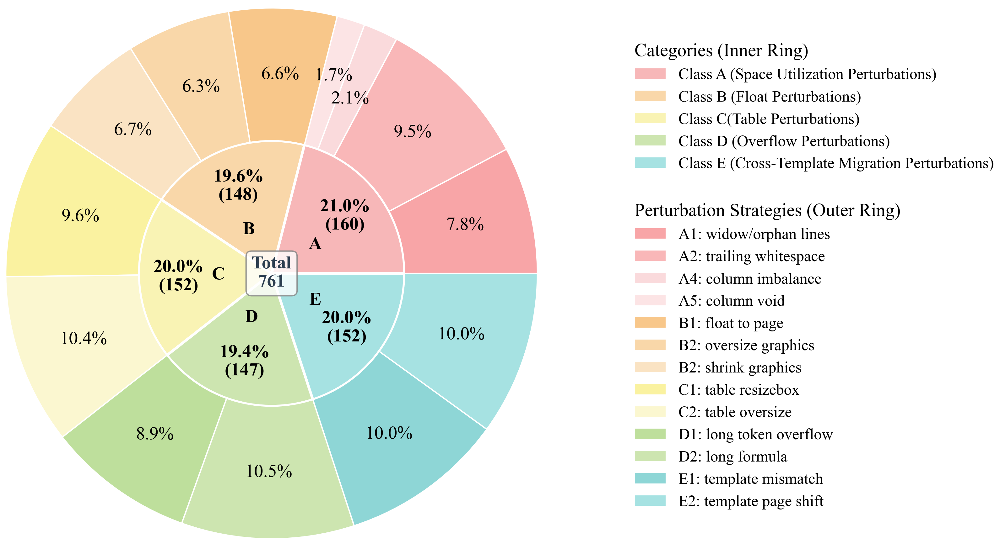
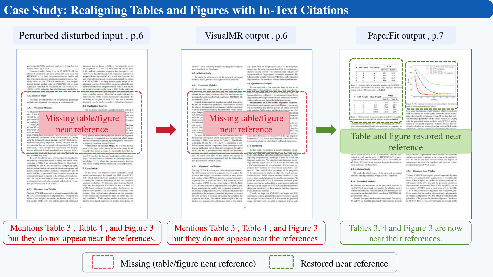
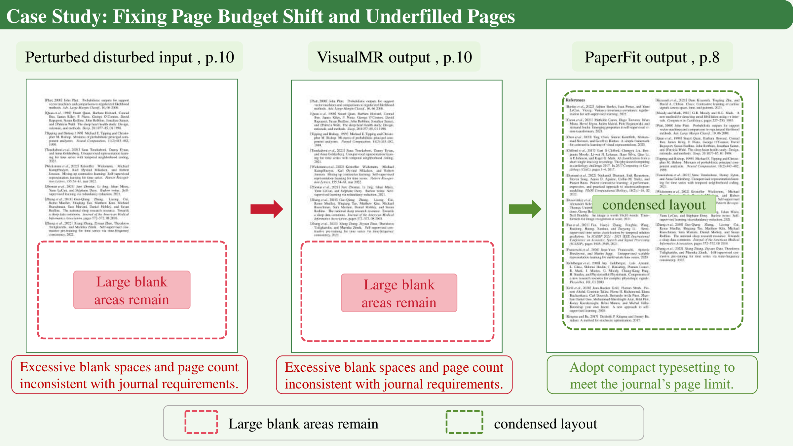
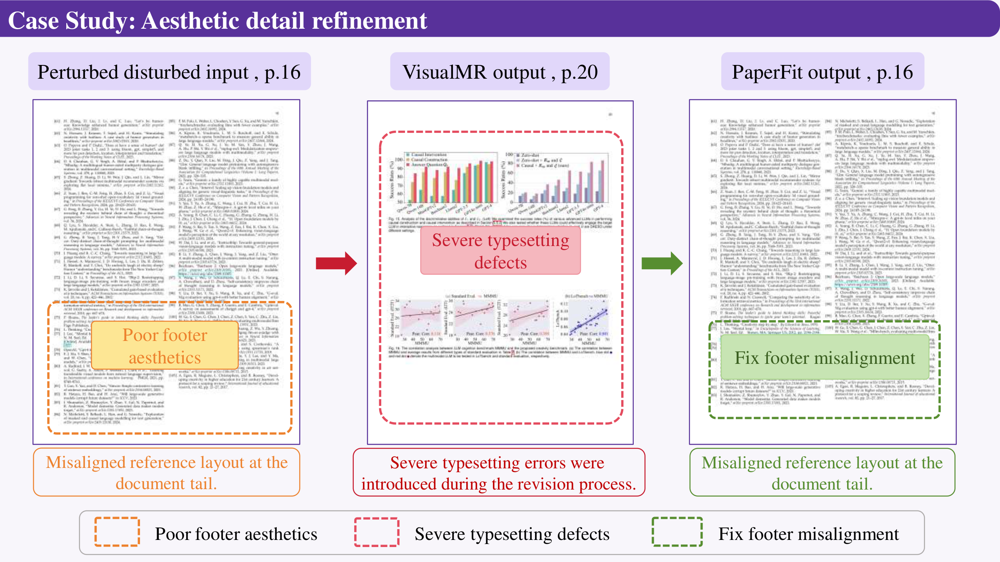
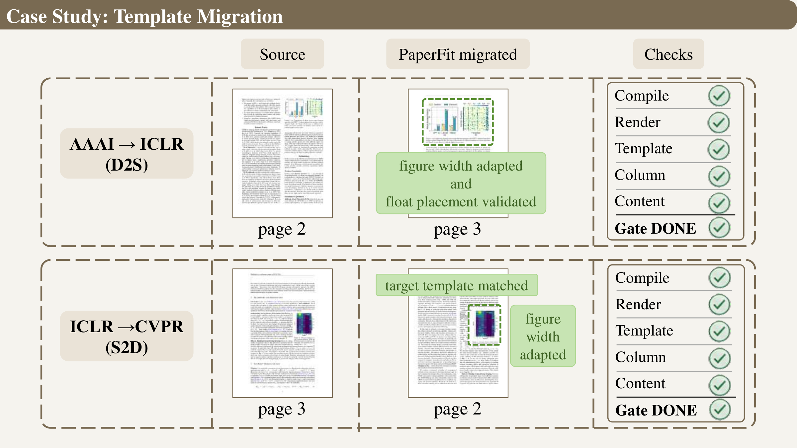

Compiling a LaTeX document is not the same as producing a publication-ready PDF. Visual defects — orphan lines, misplaced floats, oversized tables, sparse trailing pages — require spatial judgment that compile logs cannot provide. PaperFit formalizes Visual Typesetting Optimization (VTO): a closed-loop agent that senses defects from rendered page images, applies layout-native repairs, and accepts results only when compile, render, content-preservation, and page-budget gates all pass. We release PaperFit-Bench: 200 real papers across 10 venue templates, perturbed with 13 defect strategies at three difficulty levels.
How PaperFit Works
Each iteration fuses four evidence layers — source code, compile logs, PDF metadata, and rendered page images — into a structured diagnosis, then applies constrained repairs verified by quality gates.

Sense
Fuse source, log, PDF, and page-image evidence into structured defect records with category, location, and severity.
Act
Apply layout-native repairs: float re-anchoring, equation splitting, table restructuring, template-safe figure widths.
Verify
Recompile and re-render; the gatekeeper returns DONE, CONTINUE, or BLOCKED based on hard constraints and residual defects.
Results
PaperFit achieves perfect compile/render success and the highest page-budget compliance. The structured gate mechanism is the key difference over naive visual iteration.
Main Comparison
| Method | Compile | Render | VLM Score | Win Rate | Program | Page Hit |
|---|---|---|---|---|---|---|
| Perturbed (baseline) | 0.580 | 0.820 | 1.828 | — | 3.634 | 0.375 |
| RuleLog | 0.520 | 0.760 | 2.184 | 0.380 | 3.340 | 0.444 |
| TextST | 0.585 | 0.585 | 1.852 | 0.280 | 2.574 | 0.453 |
| TextMR | 0.610 | 0.610 | 2.160 | 0.425 | 2.743 | 0.623 |
| VisualST | 0.625 | 0.625 | 1.874 | 0.295 | 2.768 | 0.456 |
| VisualMR | 0.975 | 0.975 | 2.801 | 0.650 | 4.579 | 0.549 |
| PaperFit | 1.000 | 1.000 | 3.391 | 0.895 | 4.579 | 0.805 |
Model Backend Comparison (20 representative cases)
| LLM Backend | Compile | Render | VLM | Win | Page Hit |
|---|---|---|---|---|---|
| GPT-5.4 | 100% | 100% | 3.656 | 95% | 95% |
| Claude Opus 4.6 | 100% | 100% | 3.548 | 90% | 100% |
| DeepSeek-V4 Pro | 95% | 100% | 3.521 | 95% | 100% |
| MiMo-v2.5-pro | 100% | 100% | 3.652 | 100% | 95% |
Backend variation is smaller than the workflow gain over VisualMR, confirming PaperFit is not a single-model artifact.
PaperFit-Bench
A full-paper layout repair benchmark built from real arXiv projects, each paired with a perturbed source and disturbance manifest.

- 200 real academic papers from arXiv
- 10 venue templates: AAAI, ACM MM, CVPR/ICCV, ECCV, ICLR, ICML, IEEE Trans, IJCAI, IJCV, NeurIPS
- 5 defect families: space utilization, float placement, table width, overflow, cross-template migration
- 13 concrete injection strategies with programmatic validation
- 3 difficulty tiers: Easy (60), Medium (80), Hard (60)
- Visual evaluation with human/VLM correlation validated
Full Benchmark Comparison with Prior Work
| Benchmark | Task | Visual Eval | Multi-modal | Iterative |
|---|---|---|---|---|
| Im2Latex-100K | Formula reconstruction | No | No | No |
| TeXpert | LaTeX code generation | No | No | No |
| RoDLA | Layout robustness | Partial | Yes | No |
| LATTE | Element-level refinement | No | Yes | Yes |
| PaperFit-Bench | Visual typesetting repair | Yes | Yes | Yes |
Visual Examples
These cases show why compilable output is not enough — VisualMR often renders successfully but leaves the layout defect unresolved. PaperFit repairs the defect and validates the whole document.




Where PaperFit Still Fails
Hard constraints alone do not guarantee success. Highly complex multi-defect cases still challenge page-budget control.


Citation
@article{yu2026paperfit,
title={PaperFit: Vision-in-the-Loop Typesetting Optimization for Scientific Documents},
author={Yu, Bihui and Xu, Xinglong and Jiang, Junjie and Cheng, Jiabei and Jia, Caijun and Li, Siyuan and He, Conghui and Wei, Jingxuan and Tan, Cheng},
journal={arXiv preprint arXiv:2605.10341},
year={2026}
}